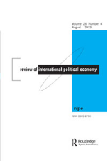
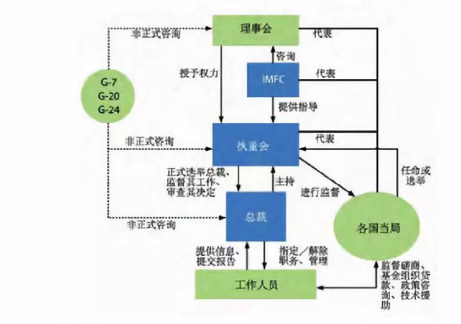
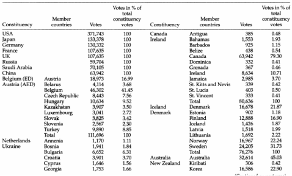
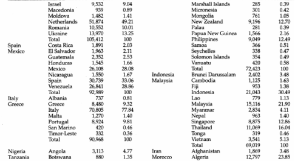
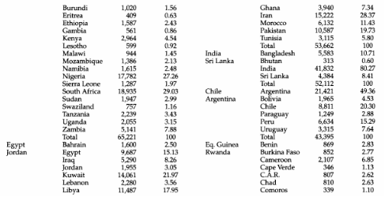
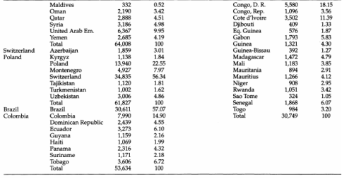
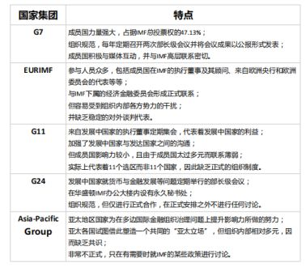
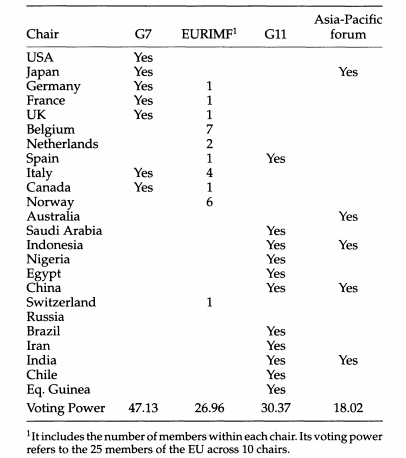

收录于合集

简 介
** 【作者】** Ngaire Woods，牛津大学布拉尼瓦克政府学院创院院长，同时兼任国际货币基金组织董事会、英联邦政府首脑会议等多重国际组织的顾问委员，其主要研究领域为组织治理、应对全球化挑战、全球发展以及全球经济秩序。2018年，她被授予英国皇家荣誉勋章。
Domenico Lombardi，国际货币关系、全球经济以及20国集团和8国集团峰会等研究领域的专家，他目前的研究重点是全球金融危机、欧洲危机和国际货币体系改革。
** **【 编译 】****刘瑛琛
** **【 校对 】****徐垚晟
** **【 审核 】****蔡宇
** 【来源】** Woods, N., & Lombardi, D. (2006). Uneven Patterns of Governance: How Developing Countries Are Represented in the IMF, Review of International Political Economy , 13(3), 480-515.
** 【期刊】** Review of International Political Economy, 国际政治经济学评论，创立于1994年，是一本以国际政治经济学为主要内容的同行学术评审杂志。该刊2017年的影响因子为2.532。

不均衡的治理模式： 发展中国家在国际货币基金组织中是如何被代表的
Uneven Patterns of Governance: How Developing Countries Are Represented in the IMF
▲Ngaire Woods
▼Domenico Lombardi
内容提要
国际货币基金组织的日常工作由执行董事会的24名成员进行管理。作为决策制定者，尽管执行董事会这一机构经常被称赞小而高效，但它的确更为有效地代表了部分国家而对另一些国家不够公平。而这一问题则是由执行董事会运行其中的组织和激励机制导致的。最为重要的机制之一便是选区。选区由各国组成，并随着各国的调整而变化，各个选区在规模、共同利益与权力分配上都有所不同。除此之外，执行董事会的有效性还受到决策制定规则、董事会成员责任的缺失以及国家集团的非正式行动等因素影响。本文通过分析这些涉及到发展中经济体和转轨经济体参与国际货币基金组织治理的正式和非正式机制，表明国际货币基金组织执行董事会的代表性可以在不改变董事会规模的情况下得到改善。
文章导读 ****
国际货币基金组织的治理框架
国际货币基金组织共有184个成员国。为了保证组织决策制定和执行的效率及灵活性，国际货币基金组织并未像联合国大会和世界贸易组织一样实行“一国一票”制，其日常运行工作由仅有24名成员的执行董事会负责。根据国际货币基金组织的规定，美国、日本、德国、法国、英国、中国、俄罗斯及沙特阿拉伯等八个国家可以指定一名执行董事，其他成员国则被划分为16个选区，每个选区选举产生一名执行董事。同时，国际货币基金组织实行加权投票表决制的议事规则，各成员国根据其经济规模、经济发展程度等多种因素享有不同份额的投票权，而各选区选举产生的执行董事则掌握着其选区内所有成员国的投票权之和。各选区成员国及其选票分配情况详见表1，国际货币基金组织具体治理程式如图1所示。
图 1 ****国际货币基金组织治理程式

表 1 ****国际货币基金组织各选区成员及其选票分配情况




**“选区”制度
**
在 国际货币基金组织 内部 ， 对各 选区的 组织及 运行并没有明确的规则 加以 规范 。那些没有权力指定执行董事的国家可自愿组成一个选区，各选区成员国数量在4个到24个不等。每一选区公开选举出一名执行董事，这名执行董事行使整个选区的投票权。各选区根据选区内国家共同的习惯或“公约”运行，而这些习惯或“公约”大多是不成文的。也就是说，单个国家可以为扩大选区的影响力、增进集团内部的一致性等原因变换其盟友，而其所在的选区也将随之改变。
选区内部治理模式
作者总结出了 三种模式用以 反映各 选区内部的权力分布情况 。第一种 模式为 “ 一国 主导模式 ”，在这种模式下，选区内的某一个国家长期占据着执行董事的席位，并管理选区内部事务。加拿大、意大利、澳大利亚和印度等国所在的选区即为这一模式。 第二种 模式为 “核心 集团 模式 ”，即在选区内部，某几个国家组成所谓“核心集团”，这一选区的执行董事就由这几个国家轮流推荐。例如，在西班牙选区，墨西哥、西班牙和委内瑞拉三国轮流占据着执行董事的席位，每国两年。 第三种 模式则为 “ 相对平等 模式 ”，在实行这一模式的选区之中，各国所拥有的投票权分布较为均衡，因此执行董事的席位也由各国轮流享有，非洲选区即为这一种模式。
选区内部责任制度
在 国际货币基金组织内部，或是 各 选区 成员国 之间 ， 一名执行董事一经选出，几乎没有任何机制 能够对其追责 。 执行 董事们基本是通过 国际货币基金组织 董事会内部的道德劝诫、 通过 他们对理事会广泛的集体责任制以及通过其与国内 政府 机构（ 通常 是央行与财政部） 的 个人联系 承担 责任的。
在国际货币基金组织的正式规则中，涉及执行董事责任的只有两点。其一在附例第14款开头处，这里明确要求国际货币基金组织的执行董事及其候补董事应当全职工作，并常驻办事处。其二则为2000年国际货币基金组织所制定的有关执行董事、候补董事和高级顾问的行为准则。
与此同时 ， 由 单个国家 指定 的执行董事与 通过 选区选举产生的执行董事之间的责任又有所差异。 前者直接对其国内政府机构如央行或财政部负责，并可以被随时解雇或撤换。后者向其所在选区成员国报告或咨询的方式多种多样，他们不必代表其所在选区的利益，但必须对那些与其利益相关的机构保持忠诚。由选区选举产生的执行董事一经选出，必须工作到其两年任期结束，其所在选区成员国没有权力终止其任命。
** ** 寻求发挥集体影响过程中的协调****
在这一部分，作者运用国际关系理论，探究了影响国家集团左右国际货币基金组织议程和政策能力的四个因素。 作者 发现， 国家 要想增强自身影响国际货币基金组织议程和政策的能力，必须 协调 好 通过扩大 成员国数量 来提升 本集团正式投票权与保持集体议程一致 和 游说能力 这两个 目标 。
最大化投票权
在 国际货币基金组织中投票权十分重要， 因此 一些选区积极扩充其成员国以提升选区所拥有的集体投票权。 但根据政治联盟理论，参与联盟者数量越多，就越难保持团结一致，所以各国会倾向于建立一个“最小化获胜联盟”。此外，小集团也更有利于克服集体行动的难题，即集团的规模越大，成员国搭便车的倾向就越强烈。同时，在国际货币基金组织中选区内成员国的数量与选区相应的投票权并无较大关联。 因此 ， 综合 理论与现实， 作者 希望限制各选区成员国的数量 ， 这可以通过减少 由 一国 指定的 执行董事 以 增加选区 来 实现。
在需要限制各选区成员国数量的情况下，较小、较弱的国家该采取何种策略以表达自身利益？ 作者 认为，小国可以 选择 “追随 强者 ”的 策略 。这一安全领域的概念对国际货币基金组织治理的借鉴意义是，国家在选择加入哪一个选区时，应该更多关注其立场与选区内其他国家立场间的关系，而不是仅考虑到充分利用选区的集体投票权。基于此， 作者提出，在对联盟或者说是选区的成功具有重要意义的因素中，居于首要地位的就是国家制造和实施共同议题的能力。
除此之外，在国际货币基金组织投票权改革这一问题上，作者还提出了两点建议。 第一，国际货币基金组织可以通过提升基本投票权在总投票权中比重的方式，使发展中国家感受到更大的公平性， 至少应当将基本投票权所占比重提升至国际货币基金组织成立初期的水平，这样会使现在“以美元计票”的状况有所改善。 第二，国际货币基金组织还可以实行 “双重多数表决要求”，即在重大问题的表决上要求有85%的投票权支持和60%的成员国支持，这样仅凭发达国家自身的支持提案无法通过，发达国家将不得不重视发展中国家的意见。
共享议程
根据作者的论述，国家制造和实施共同议题的能力对选区能否取得成功至关重要。 但就理论来讲，合作者的范围越广，制造共同议题就越难；集团的利益越多元，其成员就越难做出让步以达成共识。 国际货币基金组织也面临着这样的问题。
国际货币基金组织中存在着广泛而多元的利益，同时国际货币基金组织的决策机制也造成了一系列的利益分歧。这种分歧首先体现在借款国与非借款国之间。 根据国际货币基金组织的规则，成员国需要为其在国际货币基金组织中的借款支付一定比例的费用，这笔费用被用来维持国际货币基金组织的日常活动及行政开支。因此，提高借款利率的决议将加剧借款国与非借款国之间的利益分歧。相似地，国际货币基金组织开展研究以及其他活动的决议也将提高组织的开支，进而提高借款国所需支付的费用，这也对借款国的利益有着实质性的影响。 其次 ， 这种分歧还体现在同为借款国的新兴市场国家与低收入国家之间。 例如，在亚洲金融危机后，许多新兴市场国家选择接受国际货币基金组织富有条件的低利率贷款，而许多低收入国家则向由发达国家设立的信托基金寻求帮助。国际货币基金组织向这些信托基金提供了一些资源，但对新兴市场国家而言，国际货币基金组织的这一举动本质上是需要他们来承担成本的，因此新兴市场国家与低收入国家之间也存在着利益分歧。
在借款国与非借款国、新兴市场国家与低收入国家等几大集团之间都存在分歧的情况下，各选区之间的合作能实现吗？ 从收益上来讲，根据表 1的数据，低收入国家即便同新兴市场国家合作，所形成的选区也很难获得较强的投票权；但是，如果借款国能够与非借款国组成一个选区，这个“混合选区”则能够获得较大的投票权。
从现实经验来看 ，国际货币基金组织已有四个“混合选区”，分别是西班牙主导的选区、荷兰主导的选区、比利时主导的选区和瑞士主导的选区。 在这四个 “混合选区”中，比利时和西班牙主导的选区能够比较好地代表选区内借款国的利益，而荷兰和瑞士主导的选区则更多地站在债权国这一方。有两点可以解释这种差异：首先，相对于比利时和西班牙，荷兰和瑞士两国的经济利益与债权国一方联系较为密切，这两国的经济都较为开放，且两国在发展中国家有着大量的投资；其次，选区内的投票权分布情况使比利时和西班牙所在选区内的借款国成员有能力影响居于主导地位的国家。
总之，当联盟内成员享有广泛的共同利益时，联盟也更容易实现议程共享。但是在利益多元的国际货币基金组织内，各国也可以通过组成“混合选区”来获得更大的集体投票权和更有利于开展游说活动的各种资源。在“混合选区”内，发展中国家成员若想与居于主导地位的发达国家成员实现议程共享，可以利用自身投票权在选区集体投票权中所占有的地位进行牵制。
选区内部协调问题
选区内部的团结一致可以被选区内成员的共同物质利益与选区内部投票权分布情况所塑造。除此之外， 作者认为，以下因素也可以推动实现选区的内部协调。
第一个因素便是地理位置上的邻近。 地理位置邻近的国家之间通常已有某种区域性的联系，比如贸易往来。这种已有的联系会巩固区域内各国的共同利益，进而有利于各国采取协调一致的立场。 第二个因素是共同的地缘战略利益。 地缘战略利益的一致能够促成国家间的联合，反之，地缘战略的不一致也会使国家间无法达成共识。 第三个因素是选区与已有的国际联盟重合。第四个因素是强有力的国际机制。 根据基欧汉的论述，国际机制所带来的额外收益以及国际机制内部的转移支付将会使合作成为一种惯性。 最后，国际货币基金组织这种假设选区内部不存在利益分歧的制度设计也推动了选区的团结。 在国际货币基金组织的制度下，一个选区只能选举出一名执行董事，这名执行董事在执行董事会投出的票被认为代表着整个选区，这也迫使选区内部必须保持一致。
游说能力与技术支持
国家整合资源并将其用以形成共同议题和进行游说的能力是最后一个对实施有效的集体外交产生影响的因素。 发达国家可以为其在国际货币基金组织中的决策目标提供大量专业人才加以支持，他们还有能力对执行董事会的其他成员开展游说和辩论。发展中国家却缺少这样的资源，来自这些国家的执行董事更多依靠自身能力和个人的人际关系。 然而，游说能力和技术支持对相对弱势的国家却十分重要，因为国际货币基金组织的决策制定很多是非正式的、发生在执行董事会之外的。
** ** 国际货币基金组织内国家集团的影响****
在国际货币基金组织的执行董事会之外还存在着许多国家集团，这些国家集团以多种方式对国际货币基金组织的政策产生影响。各个国家集团及其主要特点如表2所示。
表 2 国际货币基金组织内各国家集团及其主要特点

国家集团是国际货币基金组织内一种普遍存在的非正式机制。根据统计，国际货币基金组织各主要成员国除俄罗斯外，都至少参与了一个国家集团（详见表3）。因此， 国家集团具有不可忽视的影响。首先，国家集团为国际货币基金组织的管理和政策制定提供了诸多便利。 这些国家集团为国际货币基金组织的高管提供了获取信息的渠道，它们的存在也有利于集团内各成员国达成共识 。其次，国家集团的存在也为一些成员国提出了这样的问题，即本国到底要对哪一个联盟保持忠诚，所在选区还是所在的国家集团？ 例如，加拿大同时为一个选区的主导国家和七国集团的成员，那如果七国集团提出了一项对加拿大所在选区内的发展中国家不利的议题，加拿大该如何处理？ 最后，国家集团的存在也突出了一国进行游说、偏好塑造和讨价还价的能力的重要性。 对于以七国集团为代表的发达国家而言，这有利于他们实现自身诉求；但对发展中国家而言，他们必须学会联合才能弥补这一差距。
表 3 ****国际货币基金组织主要成员国参与国家集团情况

** ** 结 论****
本文得出两个结论。第一，加权投票权与国际货币基金组织内部发展出的各种非正式联盟和游说模式共同影响着这一组织对国家的代表性，后者更是放大了前者的不平等。第二，政府将权力委托给国际货币基金组织的程度和模式十分不均衡。作者认为，本文所做研究及所得结论对研究国际货币基金组织的国际关系学者具有重要影响。
_ ** _ ** _ ** _ 本文由国政学人独家编译推荐**__
扫下方二维码查看往期精彩
【新刊速递】第01期 | Review of International Studies Vol.45, No.4, 2019

▲分类导览 1
▼分类导览2